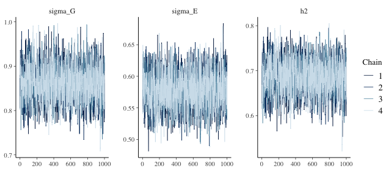
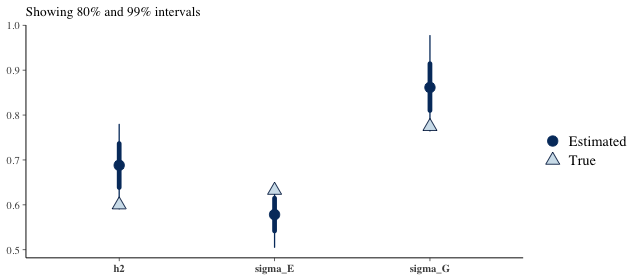
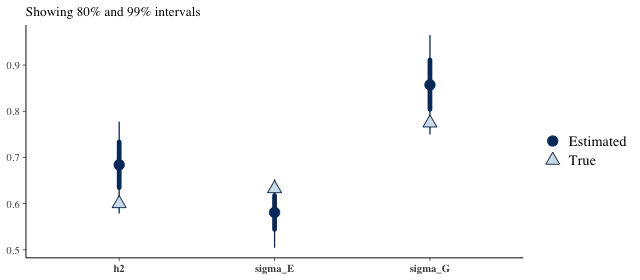
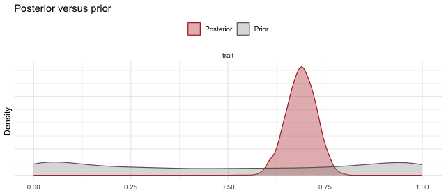
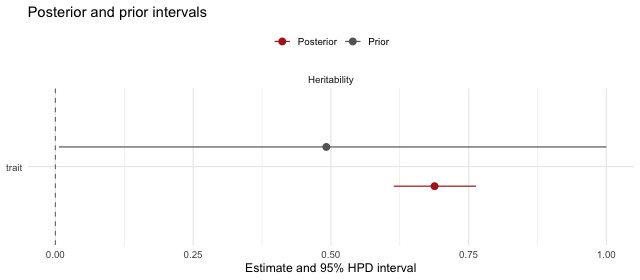
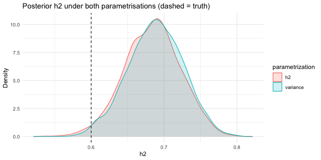

lmm_animal() fits a single trait under two
parametrisations:
-
"variance"(the default) puts half-normal priors on the genetic and residual standard deviations, and derives h2 = s_G^2 / (s_G^2 + s_E^2); -
"h2"puts a half-normal prior on the total standard deviation and a beta prior on h2 itself (beta_prior;c(1, 1)is flat).
This vignette simulates one trait on a random pedigree, fits it both ways and compares the two posteriors with the simulated truth.
library(stanimal)
library(pedtools) # randomPed(); install with pak::pkg_install("cran/pedtools")
library(ggplot2)Simulation
A random pedigree of 1,500 individuals, a heritability of 0.6 and a sex effect.
ped <- randomPed(1500, 50, seed = 2)
ped <- data.frame(id = ped$ID, sire = ped$FIDX, dam = ped$MIDX)
A <- makeA(ped)
L_A <- chol(A)
n <- nrow(A)
set.seed(41)
h2_true <- 0.6
G <- h2_true # additive genetic variance (P = 1)
E <- 1 - h2_true # residual variance
a <- sqrt(G) * (t(L_A) %*% rnorm(n)) # Var(a) = G A
beta <- matrix(c(1, 0.3), 2, 1,
dimnames = list(c("Intercept", "sex"), "trait"))
X <- cbind(Intercept = 1, sex = sample(c(0, 1), n, replace = TRUE))
e <- rnorm(n, sd = sqrt(E))
Y <- X %*% beta + a + e
colnames(Y) <- "trait"
truth <- c(h2 = h2_true, sigma_G = sqrt(G), sigma_E = sqrt(E))
round(truth, 3)
#> h2 sigma_G sigma_E
#> 0.600 0.775 0.632Fitting both parametrisations
fit_var <- lmm_animal(Y, X, A, parametrization = "variance",
iter = 3000, warmup = 2000, chains = 4, cores = 4,
refresh = 0, seed = 1)
#> Running MCMC with 4 parallel chains...
#> Chain 1 finished in 3.0 seconds.
#> Chain 4 finished in 2.9 seconds.
#> Chain 2 finished in 3.1 seconds.
#> Chain 3 finished in 3.4 seconds.
#>
#> All 4 chains finished successfully.
#> Mean chain execution time: 3.1 seconds.
#> Total execution time: 3.9 seconds.
fit_h2 <- lmm_animal(Y, X, A, parametrization = "h2", beta_prior = c(1, 1),
iter = 3000, warmup = 2000, chains = 4, cores = 4,
refresh = 0, seed = 1)
#> Running MCMC with 4 parallel chains...
#> Chain 1 finished in 3.9 seconds.
#> Chain 2 finished in 4.2 seconds.
#> Chain 4 finished in 4.1 seconds.
#> Chain 3 finished in 4.2 seconds.
#>
#> All 4 chains finished successfully.
#> Mean chain execution time: 4.1 seconds.
#> Total execution time: 4.8 seconds.Both report the same quantities on the original scale:
h2, sigma_G and sigma_E, plus the
fixed effects.
fit_var$summary(c("h2", "sigma_G", "sigma_E", "beta"))
#> # A tibble: 5 × 10
#> variable mean median sd mad q5 q95 rhat ess_bulk ess_tail
#> <chr> <dbl> <dbl> <dbl> <dbl> <dbl> <dbl> <dbl> <dbl> <dbl>
#> 1 h2 0.688 0.689 0.0380 0.0385 0.624 0.749 1.00 1851. 1780.
#> 2 sigma_G 0.862 0.861 0.0407 0.0405 0.796 0.930 1.00 2013. 1917.
#> 3 sigma_E 0.578 0.579 0.0283 0.0281 0.531 0.625 1.00 2108. 2057.
#> 4 beta[1] 1.09 1.09 0.136 0.136 0.867 1.31 1.00 3014. 2447.
#> 5 beta[2] 0.343 0.342 0.0424 0.0428 0.274 0.411 1.00 2822. 2297.
fit_h2$summary(c("h2", "sigma_G", "sigma_E", "beta"))
#> # A tibble: 5 × 10
#> variable mean median sd mad q5 q95 rhat ess_bulk ess_tail
#> <chr> <dbl> <dbl> <dbl> <dbl> <dbl> <dbl> <dbl> <dbl> <dbl>
#> 1 h2 0.684 0.685 0.0386 0.0384 0.620 0.747 1.00 1885. 2254.
#> 2 sigma_G 0.857 0.857 0.0412 0.0410 0.790 0.926 1.00 1759. 1847.
#> 3 sigma_E 0.581 0.581 0.0285 0.0280 0.534 0.627 1.00 2404. 2901.
#> 4 beta[1] 1.09 1.09 0.133 0.132 0.873 1.32 1.00 2740. 2492.
#> 5 beta[2] 0.342 0.342 0.0428 0.0430 0.272 0.412 1.00 3121. 2615.The fixed effects are named after the columns of X:
beta_draws_var <- rename_beta(fit_var, "beta")
posterior::summarise_draws(beta_draws_var)
#> # A tibble: 2 × 10
#> variable mean median sd mad q5 q95 rhat ess_bulk ess_tail
#> <chr> <dbl> <dbl> <dbl> <dbl> <dbl> <dbl> <dbl> <dbl> <dbl>
#> 1 beta[Intercept] 1.09 1.09 0.136 0.136 0.867 1.31 1.00 3014. 2447.
#> 2 beta[sex] 0.343 0.342 0.0424 0.0428 0.274 0.411 1.00 2822. 2297.Posterior means against the simulated truth:
rbind(variance = c(h2 = unname(draws_mean(fit_var, "h2")),
sigma_G = unname(draws_mean(fit_var, "sigma_G")),
sigma_E = unname(draws_mean(fit_var, "sigma_E"))),
h2 = c(h2 = unname(draws_mean(fit_h2, "h2")),
sigma_G = unname(draws_mean(fit_h2, "sigma_G")),
sigma_E = unname(draws_mean(fit_h2, "sigma_E"))),
truth = truth)
#> h2 sigma_G sigma_E
#> variance 0.6881548 0.8615085 0.5782723
#> h2 0.6840105 0.8571225 0.5808681
#> truth 0.6000000 0.7745967 0.6324555
round(drop(draws_mean(fit_var, "beta")), 3)
#> Intercept sex
#> 1.088 0.343
t(beta)
#> Intercept sex
#> trait 1 0.3Diagnostics
E-BFMI is where the two parametrisations can differ. When the genetic
variance is weakly identified, the variance version mixes poorly in the
neck between the two variance components; lmm_animal() then
warns and suggests parametrization = "h2". Here the
pedigree is large and both are fine.
rbind(variance = fit_var$diagnostic_summary(quiet = TRUE)$ebfmi,
h2 = fit_h2$diagnostic_summary(quiet = TRUE)$ebfmi)
#> [,1] [,2] [,3] [,4]
#> variance 1.1065688 0.9442534 1.027216 0.9358094
#> h2 0.9769259 0.9893814 1.094556 0.9586090
fit_var$summary(c("h2", "sigma_G", "sigma_E"),
posterior::default_convergence_measures())
#> # A tibble: 3 × 4
#> variable rhat ess_bulk ess_tail
#> <chr> <dbl> <dbl> <dbl>
#> 1 h2 1.00 1851. 1780.
#> 2 sigma_G 1.00 2013. 1917.
#> 3 sigma_E 1.00 2108. 2057.
fit_h2$summary(c("h2", "sigma_G", "sigma_E"),
posterior::default_convergence_measures())
#> # A tibble: 3 × 4
#> variable rhat ess_bulk ess_tail
#> <chr> <dbl> <dbl> <dbl>
#> 1 h2 1.00 1885. 2254.
#> 2 sigma_G 1.00 1759. 1847.
#> 3 sigma_E 1.00 2404. 2901.
bayesplot::color_scheme_set("blue")
bayesplot::mcmc_trace(fit_var$draws(c("sigma_G", "sigma_E", "h2")))
plot of chunk trace
Intervals against the truth
In bayesplot::mcmc_recover_intervals() the filled circle
is the posterior mean, the thick and thin segments are the 80% and 99%
intervals, and the simulated value is the hollow triangle.
interval_plot <- function(fit, pars, truth) {
bayesplot::mcmc_recover_intervals(
fit$draws(pars), true = stats::setNames(truth, pars),
prob = 0.8, prob_outer = 0.99, point_est = "mean")
}
interval_plot(fit_var, c("h2", "sigma_G", "sigma_E"), truth)
plot of chunk intervals
interval_plot(fit_h2, c("h2", "sigma_G", "sigma_E"), truth)
plot of chunk intervals
Prior against posterior
plot_prior_posterior() and plot_forest()
rebuild the prior the fit recorded, so the comparison is always against
the prior that was actually used.
plot_prior_posterior(fit_var, trait_names = "trait", ncol = 3)
plot of chunk prior-posterior
plot_forest(fit_var, trait_names = "trait")
plot of chunk prior-posterior
Under "variance", h2 is derived from two half-normal
standard deviations, so its prior is not flat; under "h2"
it is Beta(1, 1). With 1,500 individuals the data dominate and the two
posteriors agree:
draws_of <- function(fit, label)
data.frame(h2 = as.vector(posterior::as_draws_matrix(fit$draws("h2"))),
parametrization = label)
h2_draws <- rbind(draws_of(fit_var, "variance"), draws_of(fit_h2, "h2"))
ggplot(h2_draws, aes(h2, colour = parametrization, fill = parametrization)) +
geom_density(alpha = 0.2) +
geom_vline(xintercept = h2_true, linetype = "dashed") +
labs(x = "h2", y = "Density",
title = "Posterior h2 under both parametrisations (dashed = truth)") +
theme_minimal()
plot of chunk h2-densities